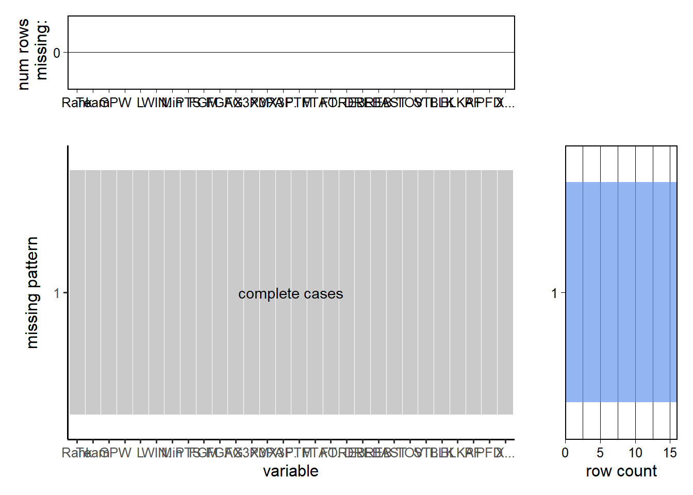
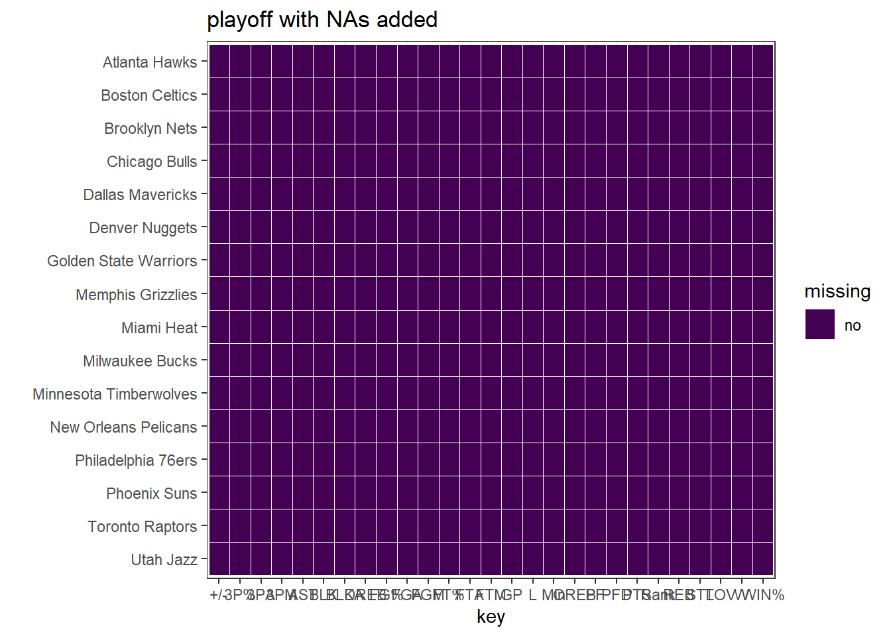

Chapter 4 Results
First thing first, that’s load the data we cleaned on data page.
4.1 Points with Rank in Playoff and Regular Season


We first analyze the teams that enter the playoff because they have higher commercial values in real world. We can find that once teams enter playoff, their average points are very close to each other, on the other word, their skills are quite similar, that’s why playoff in NBA is usually more interesting than the regular season, because every team has the chance to win. In conclusion, if we only look at the points each team get on average during playoff, they are very similar with each other. Only the bottom few perform a little worse.
While we look back in regular season, things are quite different. There is a very clear difference in the points between the teams who did or did not enter playoff. As we can see that first 16 teams (who entered the playoff) still have very similar points gain, while in last 14 teams (who did not enter playoff), their points gain dropped with the ranking. On the other word, we can say that the NBA’s official competition system is very reasonable. It screens out strong teams and weak teams very well, and the playoffs are even more exciting because of that.
4.2 Point Field Goals with Rank in Playoff and Regular Season


We now analyze the 3 Point Field performance. We first start with playoff. The trend in playoff about 3 Point is quite similar to total points, their average 3 point goals have very little differences. However, interestingly, when we check the 3 point goals percentage, we can see that the last team has the highest percentage, which means it has highest three-point field goal percentage. This can be explained by the level gap, or on the other word, although it looks like every team in playoff has very similar points goals, because of the level gap, weak teams have less offensive ability on the basketball court, the way to catch up with the strong teams is to shoot more three points. But unfortunately, this is a good strategy when fight with weak teams but not usually work with strong teams. That’s why it ranked 16 in playoff.
When we look at regular season, will can find that strong teams (who enter playoff) have both the high 3 point goals made and 3 point goals percentage. Top ranked teams among weak teams (do not enter playoff) have both low 3 point goals made and 3 point goals percentage. However, those last few teams have a very high 3 point goals made but lowest 3 point goals percentage. It can also be explained by the level gap. Strong teams are always strong, they can make 3 point easier and offensive efficiently. Top ranked teams among weak teams may have good offensive abilities, but they lack the 3 points goals to open up the gap in order to win, that’s why they lose. While the last few teams, they are desperately to shoot more 3 points in order to get the points, they are weak in offensive so that they have to shoot 3 points, but they also not good at it, that’s why their percentages are so low either.
4.3 Field Goal with Rank in Playoff and Regular Season


Then we look at the general field goals performance. This is the most critical factor that reflects a team’s performance because most of the time, a team win points through general field goals.
In playoff, things are a bit different now, although the trend is very weak, field goals made drops slightly as rank drops while in field goals percentage, they are quite similar. That means each team’s shooting percentage is similar, all of them can shoot very good. However, stronger teams have more opportunities to shoot because of their stronger offensive abilities. That’s why they can win. And we can conclude that although each team in playoff is strong, they still have subtle level gap.
In regular season this trend becomes very notable. Strong teams always have higher field goals made and field goals percentage while weak teams have lower. They have a very clear level gap.
4.4 Free Throw with Rank in Playoff and Regular Season

Now we will analyze the effect of Free Throws. Free throws are generally awarded after a foul on the shooter by the opposing team, analogous to penalty shots in other team sports. Free throws are also awarded in other situations, including technical fouls, and when the fouling team has entered the bonus/penalty situation. Also, depending on the situation, a player may be awarded between one and three free throws. Each successful free throw is worth one point.
Intuitively thinking, Free throws serve as a supporting factor for winning, not the key factor, since Free Throws only worth one point each, and the accuracy depends on the player heavily. We should not expect more Free Throws resulting in higher rank.
As expected, in Playoff the Free Throws made does not lead to a higher ranking. In fact, the team in the first place even has a low amount of Free Throws made.
This happened again in the analysis in Regular Season, in Regular Season the Free Throws made also does not lead to a higher ranking. In fact, the team in the first place even has a low amount of Free Throws made in general.
4.5 Rebounds made and Rank in Playoff and Regular Season

Then we will analyze the effect of Rebounds made. A rebound, or board, is a statistic awarded to a player who retrieves the ball after a missed field goal or free throw.Rebounds in basketball are a routine part in the game; if a shot is successfully made possession of the ball will change, otherwise the rebound allows the defensive team to take possession. Rebounds are also given to a player who tips in a missed shot on his team’s offensive end. A rebound can be grabbed by either an offensive player or a defensive player.
Intuitively thinking, Rebounds made serve as a key factor for winning, since each rebound means the opportunity for a team to be ofensive, and have the change to score points. We should expect more rebounds being made resulting in higher rank.
As expected, in Playoff the Rebounds made does lead to a higher ranking. In fact, the team in the first place even has a high amount of rebounds made.
This happened again in the analysis in Regular Season more obviously, in Regular Season the rebounds made also leads to a higher ranking. In fact, the team in the first place even has a how amount of rebounds made in general.
4.6 Personal Fouls made and Rank in Playoff and Regular Season

Finally we will analyze the effect of Personal Fouls. A personal foul is a breach of the rules that concerns illegal personal contact with an opponent. It is the most common type of foul in basketball. A player fouls out on reaching a limit on personal fouls for the game and is disqualified from participation in the remainder of the game. Players routinely initiate illegal contact to purposely affect the play, hoping it is seen as too minor to be ruled a foul. The threshold is subjective and varies among officials and from game to game. Most contact fouls are not regarded as unsportsmanlike.
Intuitively thinking, Personal Fouls should have a negative correlation with ranking, since Personal Fouls will provide more attacking chance for the opposite team, and the player might have to retreat. We should expect less Personal Fouls in higher rank.
As expected, in Playoff less Personal Fouls does lead to a higher ranking. In fact, the team in the first place even has a low amount of Personal Fouls.
This does not happened again in the analysis in Regular Season, in Regular Season less Personal Fouls does not lead to a higher ranking from the plot. One of the reasons could be the skill differences are to large between teams. Personal Fouls factor is not strong enough to secure a high rank, although more attacking opportunities were provided.